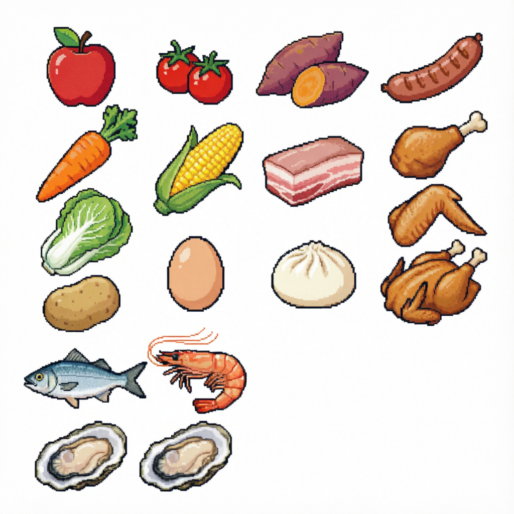

Food detection
The food detection gallery demonstrates object localization and classification for smart kitchen and inspection applications.


Pipeline
RGB frame
-> detector-specific resize and quantization
-> IE static graph inference
-> bounding-box decode and confidence filtering
-> non-maximum suppression
-> application output
IE executes the model; the application supplies detector-specific decode, class metadata, thresholds, and post-processing. The implementation uses the same caller-owned pool and backend fallback contracts as other CNN workloads.
Use the accompanying model report for class count, accuracy, and target-board frame rate. The image alone is not performance evidence. See Object detection for deployment notes.